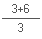

Ενα κείμενο για αρχάριους, Εκδοση 2, Αύγουστος 2003
"What is computer programming? Nothing mysterious! Programming is simply communicating with a computer - telling it what to do and when to do it. To program your computer you'll only learn two things: the language your computer understands, and the way you talk to it. No lengthy training periods or super-sophisticated skills are required."
Μετάφραση: "Τι είναι ο προγραμματισμός Η/Υ; Τίποτα το μυστήριο! Ο προγραμματισμός είναι, απλά, η επικοινωνία με ένα υπολογιστή - λέγοντας του τι να κάνει και πότε να το κάνει. Για να προγραμματίσεις τον υπολογιστή σου θα χρειαστεί να μάθεις μόνο δύο πράγματα: Την γλώσσα που ο υπολογιστής καταλαβαίνει και ο τρόπος που πρέπει να του "μιλάς". Δεν χρειάζονται μακρές περίοδοι εκπαίδευσης ή ειδικές ικανότητες."
"Texas Instruments TI-99/4A Computer. Beginner's BASIC"
Copyright (c) 1979, 1981 by Texas Instruments Incorporated
Απόσπασμα από το πρώτο βιβλίο για Η/Υ που διάβασα.
...
# sbasic
Η SB ξεκίνησε, και μας προτρέπει να πληκτρολογήσουμε το πρόγραμμα μας.
SmallBASIC version 0.9.0, use -h for help Press CTRL+D to run. * READY *
Ήρθε η ώρα να γράψουμε τις πρώτες "διαταγές" μας προς το μηχάνημα.
Πληκτρολογήστε:
PRINT "Hello world"
PRINT σημαίνει τύπωσε, γράψε. Αυτή είναι η διαταγή μας προς τον Η/Υ.
Δίπλα απο την διαταγή πληκτρολογούμε τις παραμέτρους, δηλαδή το τι να τυπώσει (στο παράδειγμα μας "Hello world").
Τώρα πατήστε το πλήκτρο [ENTER] και μετά τα πλήκτρα [Ctrl+D]
SmallBASIC version 0.9.0, use -h for help Press CTRL+D to run. * READY * PRINT "Hello world" Hello world * DONE *
Ορίστε το αποτέλεσμα :)
Ο υπολογιστής μας, εκτέλεσε την διαταγή που δώσαμε, και μας ειδοποίησε ότι τελείωσε την εργασία του τυπώνοντας την λέξη * DONE * (done = το έκανα, τελείωσα).
Είναι εύκολο τώρα πια να καταλάβουμε ότι τα προγράμματα είναι μια σειρά απο διαταγές προς τον υπολογιστή.
Η SB προσφέρει μια μεγάλη ποικιλία απο διαταγές που μπορείτε να πληκτρολογήσετε. Ο κατάλογος αυτός βρίσκεται στην πρώτη σελίδα του site μας με τον τίτλο "SmallBASIC Guide".
Ο υπολογιστής είναι μηχανή, για να καταλάβει τι του ζητάμε πρέπει να το γράψουμε με συγκεκριμένη σύνταξη. Είδαμε απο το παραπάνω παράδειγμα πως συντάσσουμε την εντολή PRINT.
Τα διπλά εισαγωγικά δηλώνουν στην SB ότι αυτό που γράψαμε είναι κάποιο κείμενο. Αυτό χρειάζεται γιατί όπως Θα δούμε παρακάτω, μπορούμε να δώσουμε παραμέτρους που δεν είναι απλά κείμενα.
Τι γίνετε όμως όταν θέλουμε να δώσουμε πάνω απο μία παραμέτρους;

Ωραία μέχρι εδώ... Αλλά γιατί να χρειάζεται να δώσουμε πάνω απο μια παράμετρο;
Στο παράδειγμα μας, δεν έχει ακόμη νόημα. Και οι δύο διαταγές κάνουν το ίδιο πράγμα.
Τί γίνετε όμως όταν θέλουμε να τυπώσουμε το αποτέλεσμα μιας πράξης;
PRINT "Το αποτέλεσμα της πρόσθεσης 1+2 είναι =", 1+2
Η δεύτερη παράμετρος εδω, είναι μια πράξη. Όταν ο υπολογιστής εκτελέσει αυτή την διαταγή θα τυπώσει στην οθόνη:
Το αποτέλεσμα της πρόσθεσης 1+2 είναι = 3
Πρόσθεση, αφαίρεση, πολλαπλασιασμός και διαίρεση
PRINT 2+4, 4-2, 3*4, 10/5
Οι πράξεις αυτές δεν έχουν μεγάλη διαφορά από όπως τις γράφεται με το χέρι. Αυτό όμως που πρέπει να θυμάστε είναι ότι το σύμβολο του πολλαπλασιασμού είναι το αστεράκι (*)
Στο παράδειγμα μας βάζουμε τον υπολογιστή να τυπώσει τα αποτελέσματα των πράξεων 2+4, 4-2, 3*4, 10/5. Οπότε λογικό είναι να περιμένουμε το παρακάτω αποτέλεσμα:
6 2 12 2
Προσέχτε ότι οι δεκαδικοί αριθμοί δηλώνονται με την τελεία (και όχι το κόμα) όπως στο Αγγλικό σύστημα. π.χ. PRINT "π = ", 3.14
Η SB επιλύνει τις πράξεις με την σειρά που μάθαμε στο σχολείο: πρώτα ο πολλάπλασιασμός και η διαίρεση και μετά η πρόσθεση και η αφαίρεση. Αυτό είναι αυτονόητο και σωστό, πως θα εκφράσουμε όμως πιο σύνθετες πράξεις;
π.χ.
Στο παραπάνω παράδειγμα πρέπει πρώτα να προσθέσουμε το 3+6 και μετά να διαιρέσουμε το αποτέλεσμα με το 3. Δηλαδή η πράξη 3+6 έχει προτεραιότητα σε σχέση με την διαίρεση.
Για να δηλώσουμε την προτεραιότητα αυτή χρησιμοποιούμε τις παρενθέσεις: (3+6)/3.
Παρομοίως δηλώνονται και πιο σύνθετες πράξεις:
 = ((3+3)*2)/3
= ((3+3)*2)/3
Οι δυνάμεις συμβολίζονται με το ^.
Το 4 στο τετράγωνο γράφετε 4^2, το 6 στον κύβο 6^3.
Όταν θέλουμε να δηλώσουμε πολύ μεγάλους ή μικρούς αριθμούς μπορούμε να χρησιμοποιήσουμε την "επιστημονική" σύνταξη:
νEδ, ν = αριθμός, δ = εκθέτης του 10, π.χ. 1E11 = 1 * 10 ^ 11
Το Ε δηλαδή εκφράζει το τμήμα "*10^".
Μεταβλητές είναι μνήμη την οποία την χρησιμοποιούμε για να αποθηκεύσουμε κάποιες τιμές.
π.χ.
Α=5 PRINT A
Στην πρώτη γραμμή δίνουμε την τιμή 5 στην μεταβλητή με το όνομα Α.
Στην δεύτερη γραμμή τυπώνουμε τα περιεχόμενα της μεταβλητής A. Προσέξτε οτι η παράμετρος του
PRINT είναι χωρίς διπλά εισαγωγικά γιατί αυτή τη στιγμή ζητάμε απο την BASIC να τυπώσει τα
περιεχόμενα της μεταβλητής Α.
Φανταστήτε την μνήμη του Η/Υ σας, σαν ένα τεράστιο έπιπλο απο συρτάρια. Κάθε ένα απο τα συρτάρια είναι μια μεταβλητή. Η εττικέτα έξω απο το συρτάρι είναι το όνομα της μεταβλητής, ενώ μέσα στο συρτάρι αποθηκεύουμε την τιμή της μεταβλητής.
Δηλαδή στο παράδειγμα μας (Α=5), πήραμε ένα συρτάρι, γράψαμε απ' έξω, στην εττικέτα του, το όνομα Α και βάλαμε μέσα τον αριθμό 5.
Ας δούμε κάτι με πιό πολλές μεταβλητές
A=5 B=8 A=3 PRINT A,B
Ας παρακολουθήσουμε τώρα τι θα συμβεί στην μνήμη...

Τέλος η διαταγή PRINT θα γράψει στην οθόνη τα περιεχόμενα των "συρταριών" Α και Β. Δηλαδή το αποτέλεσμα που θα τυπωθεί στην οθόνη θα είναι 3 και 8
Ωραία όλα αυτά τα κουτάκια αλλά τι να τα κάνουμε;
Σύντομα θα δούμε την χρήση τους, πρώτα όμως ας μάθουμε την διαταγή INPUT
Ας γράψουμε το παρακάτω πρόγραμμα:
INPUT "Your name please ", A PRINT "Hello", A
Αυτή η διαταγή βάζει τον υπολογιστή μας να περιμένει από τον χρήστη (δηλαδή εμάς) να πληκτρολογήσει μια τιμή. Την τιμή που θα γράψει ο χρήστης την αποθηκεύει στην παράμετρο-μεταβλητή (στο παράδειγμά μας στην A).
Ο υπολογιστής άρχισε να εκτελεί τις διαταγές που του δώσαμε, και τώρα βρίσκετε στην INPUT.
Περιμένει απο εμάς να γράψουμε το όνομα μας... Πληκτρολογήστε, λοιπόν, το όνομα σας
Ορίστε, το δικό μου...
Τώρα πρέπει να πούμε στην INPUT ότι "εν'τάξει το γράψαμε, πήγαινε παρακάτω επιτέλους...". Για να καταλάβει η INPUT ότι τελειώσαμε πρέπει να πατήσουμε το πλήκτρο [ENTER].
Μετά το [ENTER] που πατήσαμε, η εντολή INPUT έβαλε το όνομα σας στην μεταβλητή Α.
Οπότε βλέπουμε τώρα και τα αποτελέσματα της PRINT "Hello", A
Αυτό ήταν...
Ας έρθουμε τώρα σε ένα πιο σοβαρό πρόγραμμα, το οποίο να μετατρέπει τις μονάδες θερμοκρασίας Φαρενάιτ στην κλίμακα Κελσίου.
Ξέρουμε, και αν δεν το ξέρετε το μαθαίνετε τώρα, ότι 5/9*(μονάδες Φαρενάιτ - 32) = βαθμοί Κελσίου. Θα χρησιμοποιήσουμε το γράμμα C για να συμβολίσουμε τους βαθμούς Κελσίου και το F τους βαθμούς Φαρενάιτ.
Πληκτρολογούμε το πρόγραμμα:
REM Ορίζουμε στο πρόγραμμα μας ότι οι βαθμοί F REM που θέλουμε να μετατρέψουμε είναι 87 F=87 REM Δηλώνουμε τον υπολογισμό του C C=5/9*(F-32) REM Και τυπώνουμε το αποτέλεσμα PRINT "Οι" PRINT F, "βαθμοί Φαρενάιτ είναι" PRINT C, "βαθμοί Κελσίου"
Η εντολή REM μας επιτρέπει να γράφουμε σημειώσεις μέσα στο πρόγραμμα.
Οι σημειώσεις αυτές δεν είναι διαταγές προς την SB αλλά σημειώσεις που κρατάμε μέσα στο
πρόγραμμα για δική μας ευκολία. Η SB θα τα αγνοήσει.
Ορίστε το αποτέλεσμα :)
Πάμε πίσω τώρα στο κώδικα (MENU και μετά Close) για να χρησιμοποιήσουμε την
INPUT!
Αντικαταστήστε την διαταγή F=87 με την INPUT F,
έτσι ώστε να μας ρωτάει, κάθε φορά που τρέχουμε το πρόγραμμα, την τιμή της μεταβλητής
F, δηλαδή την τιμή Φαρενάιτ που θέλουμε να μετατρέψουμε.
Το πρόγραμμα ξεκίνησε και περιμένει απο εμάς να πληκτρολογήσουμε την τιμή του F.
Την γράφουμε λοιπόν και πατάμε το πλήκτρο [ENTER].
Στο παράδειγμα εδώ, έδωσα την τιμή 60.
Ορίστε το αποτέλεσμα.